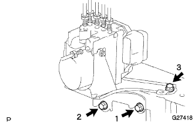

Brake actuator assessed (with VSC) installation |
| 1. Brake actuator assertion |
Brake actuator Assy is attached to two nuts to the brake actuator bracket Assy.
| 2. Brake actuator Assy W/Bracket installation |
In the order of the figure, the brake actuator Assy is tentatively attached with three bolts.
|  |
Tighten the three bolts in the order of the figure.
Connect the connector to the brake actuator asser.
 |
Use union nut wrench 10 to connect six brake tubes to the brake actuator asser.
Tighten one bolt and connect the wire harness clamp bracket.
| 3. Air cleaner ASSY installation |
With 4 bolts, attach the air cleaner case W/Air Cleanine Let No.1 and No.2.
Attach the air cleaner filter element.
Attach the air cleaner cap W/Air Cleaner Hose No.1.
| 4. Battery installation |
Attach the battery tray.
Attach the battery.
Attach the battery clamp with bolts and nuts.
| 5. Brake system air removal |
reference)| 6. Brake fluid quantity inspection |
Check the amount of brake fluid, and if necessary, replenish to the MAX position in the reservoir.
| 7. Brake fluid leak inspection |
| 8. Test mode inspection (VSC sensor chaeck) |
reference)| 9. Obtained 0 points of yorrate sensor |
reference)| 10. Brake actuator active test |
reference)